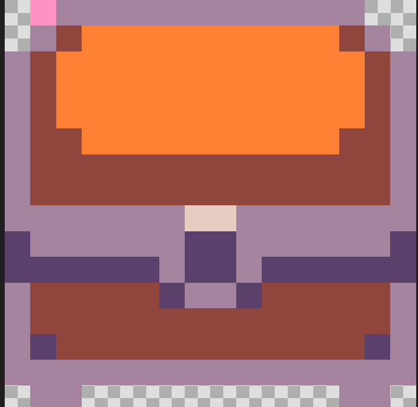
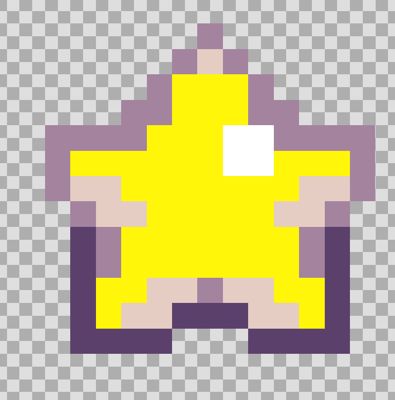
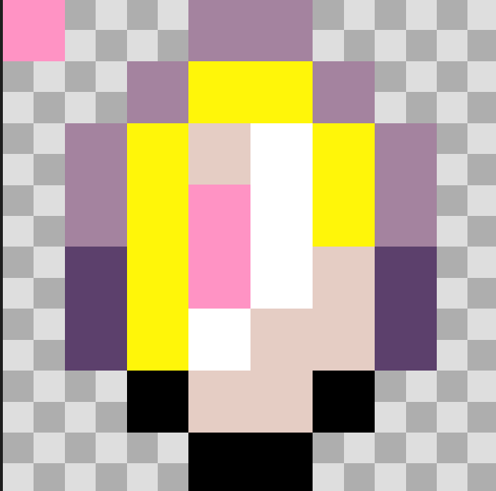
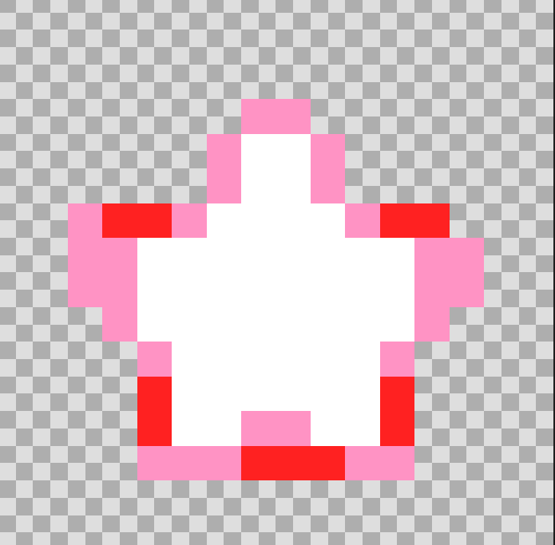
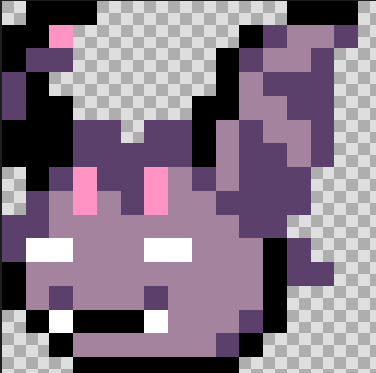
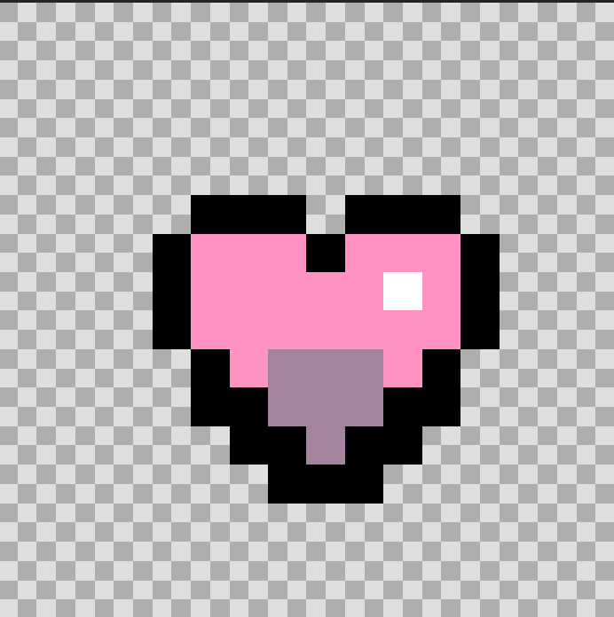
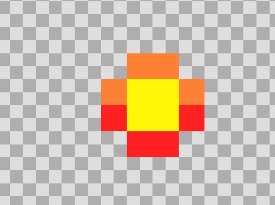
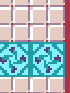
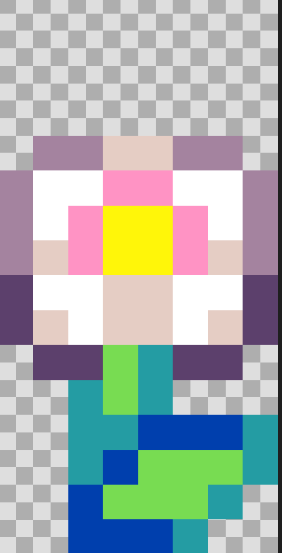

Azalpena
 Pertsonai nagusia: Hau nire pertsonai nagusia da, printzesa
bat eta bera gaztelutik ihes egin behar du.
Pertsonai nagusia: Hau nire pertsonai nagusia da, printzesa
bat eta bera gaztelutik ihes egin behar du.
Kofrea: Hauetako bi daude bi mapetan,bakoitza ukitzerakoan aterako da izar bat eta bost puntu irabaziko du pertsonaia.,
Izarra: Hau kofretik ateratzen da,eta ukitzerakoan bost puntu irabazten duzu.
Txanpona:hauek mapa osoan zehar sakabanatuta daude, bat ikutzerakoan puntu bat irabazten joaten zara.
Izarra:Izar hau kofretik ateratzen da, pertsonaiak ikutzen duenean desagertzen da eta 5 puntu hematen dio
Sagusarra:Hau etsailea da, pertsonaia ikutzen duenean bere bizitza barra jaisten joaten da eta gero bizitzak kentzen dio pertsonaiari.
Bihotza:Honeik pertsonai nagusia bizitzak irabazi ditzake ikutzerakoan, bihotz bakoitzegatik bizita bat irabazten du.
Proiektile:Hau proiektile efektuarekin atera daiteke, hau etsailea jotzen badu hiltzen du eta pertsonai nagusiari irabazten laguntzen dio Zuhaitza:Hau mapa batetik bestera
joateko jarri dut,nire pertsonaia
ikutzerakoan eta mapa horretan puntu
gustiak edukita beste mapara pasako da
Zuhaitza:Hau mapa batetik bestera
joateko jarri dut,nire pertsonaia
ikutzerakoan eta mapa horretan puntu
gustiak edukita beste mapara pasako da
Gordetzeko lekua: Hemen beriz, etsailea nire pertsonaia ikutzen duen bakoitzean non agertu behar den erakusten du, azkeneko gorde puntura pasako da nire pertsonaia
Lorea:Honekin nire pertsonaia puntu extrak eduki ditzake